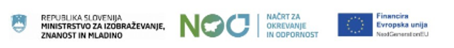
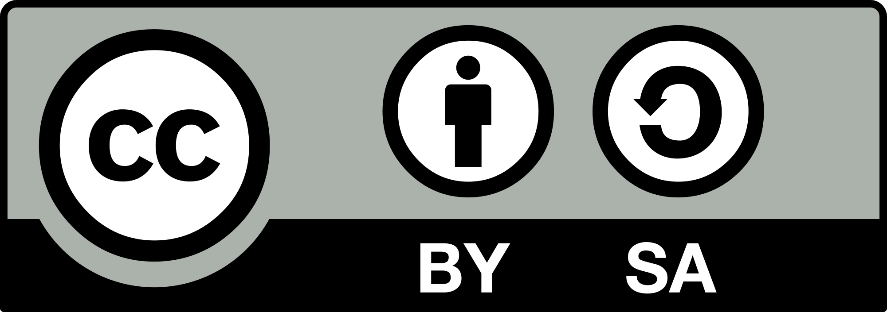

Portal povezuje projekte RAČek, B-RIN, MARiNKA in KataRINa ter podpira razvoj temeljnih vsebin računalništva in informatike v slovenskem vzgojno-izobraževalnem prostoru.
Tukaj lahko dodaš uradni kontakt, e-pošto ali naslov.


@Univerza na Primorskem, 2026
Vse pravice pridržane, reproduciranje in razmnoževanje dela po zakonu o avtorskih pravicah ni dovoljeno.